Cyberpunk 2077
Night City. The mercenary V. An immortality chip that changes everything.
Review
Cyberpunk 2077's launch in December 2020 was one of the most damaging releases in AAA gaming history, particularly on last-generation consoles. But what has been accomplished since is equally remarkable: through years of patches, updates, and the transformative Phantom Liberty expansion, CDPR rebuilt Cyberpunk into one of the finest action RPGs of its generation. This is now the definitive redemption arc in gaming.
Night City is an astonishing achievement in world-building. Few game worlds have ever felt so alive, so dense with competing cultures, corporate hierarchies, underground factions, and ordinary human misery. The verticality of the city — Corpo Towers looming over street-level slums, connecting to the Badlands sprawl outside — creates a sense of place that is genuinely cinematic. Your character, V, navigates this world with increasingly powerful cyberware in a build system that ranges from stealth hacker to chrome-plated killing machine.
Phantom Liberty is extraordinary — a spy thriller set in the enclosed district of Dogtown that adds new mechanics, a compelling cast including Idris Elba, and endings that rival the base game in emotional impact. The base game's story, centered on rockstar Johnny Silverhand (Keanu Reeves) and his contentious relationship with V, is bold, strange, and genuinely moving in its best moments. Cyberpunk 2077 is now what it was always supposed to be.
Strengths and Limits
- Night City is one of the most detailed and atmospheric game worlds ever made
- Phantom Liberty expansion is a near-perfect spy thriller add-on
- Build variety is vast — stealth, hacking, melee, gunplay all feel distinct
- Main story delivers genuinely surprising, emotionally resonant moments
- Keanu Reeves delivers an excellent, nuanced performance as Johnny Silverhand
- 2.0 update massively improved police AI, cyberware, and skill trees
- Disastrous launch reputation lingers even as the game now excels
- Open world side content is uneven in quality
- Some RPG choices have less impact than implied
- Still demanding on hardware to achieve true visual fidelity
Reader Fit
This review is written around fit: who should play it, what kind of session it rewards, and what friction might make it wrong for another reader. A high grade does not mean every player should buy it immediately. It means the game has a clear identity, a strong reason to exist, and enough craft to justify attention from the right audience.